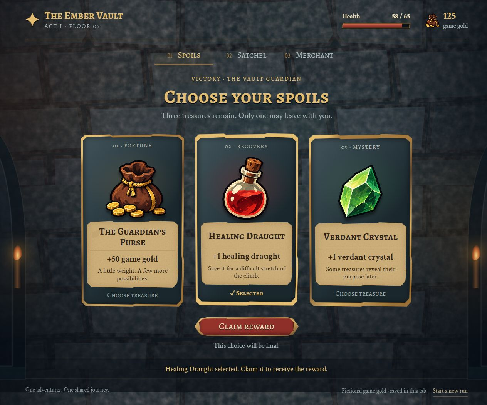
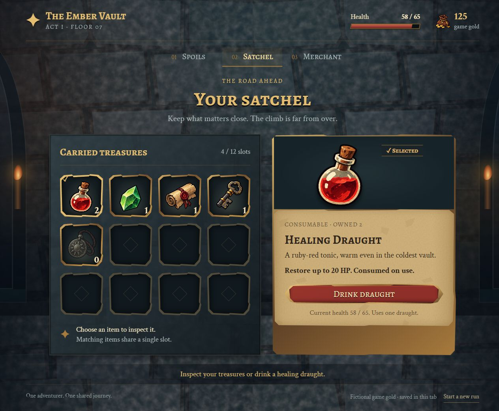
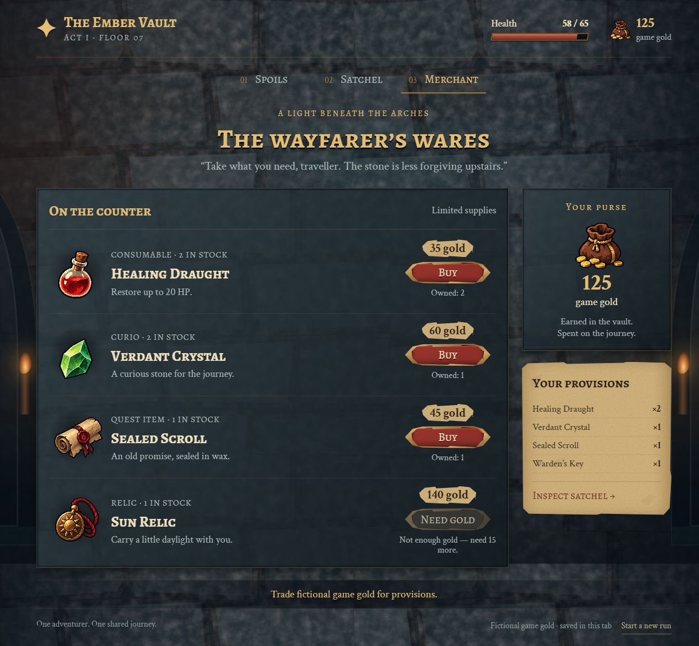

Game UI
Game UIREFERENCE → RULES → INTERACTIVE SCREENS
六种风格，
二十四个交互界面。
原三套的十五个界面继续保留。新增暗黑 II、FFVII、宝可梦绿宝石三套参考包与九个对应界面，共六套、二十四个交互实验。
截图来自浏览器实际渲染，点击进入对应界面。三个 Skill 下载包保持 v1.0.0，未因新增测试而更新。
REFERENCE SKILL / V1.0.0 · UNCHANGED
Balatro 风格
绿色桌面、粗像素字与复古卡牌。 原 3 屏与新 2 屏分别保留制作记录；参考图、组件、物品素材与规则随原包提供。


同模型新代理的一轮测试：从原参考包延伸对话与设置。


REFERENCE SKILL / V1.0.0 · UNCHANGED
杀戮尖塔 风格
磨损羊皮纸、手绘物品与暗色石质边框。 原 3 屏与新 2 屏分别保留制作记录；参考图、组件、物品素材与规则随原包提供。

奖励三选一 ↗
选择、查看详情与领取反馈。

背包 ↗
物品浏览、详情与使用反馈。

商店 ↗
查看价格、库存与购买反馈。
同模型新代理的一轮测试：从原参考包延伸对话与设置。
REFERENCE SKILL / V1.0.0 · UNCHANGED
星露谷 风格
温暖木框、清晰像素与乡间日常物品。 原 3 屏与新 2 屏分别保留制作记录；参考图、组件、物品素材与规则随原包提供。


同模型新代理的一轮测试：从原参考包延伸对话与设置。


NEW / THREE CLASSIC SKILLS
再加三套经典风格。
新增九个对应界面，各有独立参考包与检查记录。
DIABLO II / V1.0.0
暗黑 II · 经典哥特装备界面
深色石雕、旧金属边框、红蓝资源球与多格装备背包。 参考包与独立 AI 三屏实验分别保留，点击截图进入实际界面。


FINAL FANTASY VII / V1.0.0
FFVII · 原作蓝色菜单
深蓝渐变、细银白边框、紧凑队伍数据与白色命令指针。 参考包与独立 AI 三屏实验分别保留，点击截图进入实际界面。


POKEMON EMERALD / V1.0.0
宝可梦绿宝石 · GBA 像素界面
硬像素描边、奶油文字框、绿色队伍面板与掌机式四选项指令。 参考包与独立 AI 三屏实验分别保留，点击截图进入实际界面。


EXPERIMENTAL / LOCAL WEB
查看结果，也查看实验条件。
新增 6 屏沿用三套未改动的 v1.0.0 包。新 AI 未参与旧界面制作，没有获得成品页面，仅根据包内材料与新需求制作。这是同模型新代理的一轮新类型测试，不代表跨模型稳定性。尚未验证游戏引擎导出或 Figma 编辑文件。参考图与物品图集由 AI 生成，未包含官方游戏资产。
阅读泛化测试说明与逐套报告 ↗